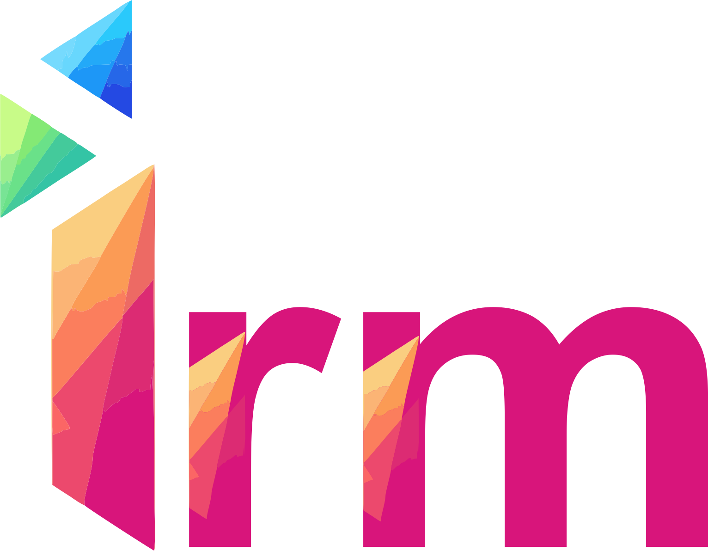

<nav class="navbar navbar-expand-lg navbar-light shadow-sm" style="background-color: var(--bg-navbar); border-bottom: 1px solid var(--border-color);">
    <div class="container-fluid">
        <a class="navbar-brand fw-bold d-flex align-items-center" href="/">
            
        </a>
        <button class="navbar-toggler" type="button" data-bs-toggle="collapse" data-bs-target="#mainNavbar">
            <span class="navbar-toggler-icon"></span>
        </button>
        <div class="collapse navbar-collapse" id="mainNavbar">
            <ul class="navbar-nav me-auto mb-2 mb-lg-0">
            </ul>
            <div class="d-flex align-items-center gap-3">
                <div id="utc-clock-container" class="fw-bold text-secondary text-center" style="display: none; line-height: 1.2; font-size: 0.9rem;">
                    <span id="utc-date-display">--/--/---- </span>
                    <span id="utc-time-display">--:--:-- UTC</span>
                </div>

                <button id="header-theme-toggle" class="btn btn-sm btn-link nav-link p-0 text-dark" style="font-size: 1.2rem;" title="Ubah Tema">
                    <svg id="icon-sun" xmlns="http://www.w3.org/2000/svg" width="20" height="20" viewBox="0 0 24 24" fill="none" stroke="currentColor" stroke-width="2" stroke-linecap="round" stroke-linejoin="round" style="display: none;">
                        <circle cx="12" cy="12" r="5"></circle>
                        <line x1="12" y1="1" x2="12" y2="3"></line>
                        <line x1="12" y1="21" x2="12" y2="23"></line>
                        <line x1="4.22" y1="4.22" x2="5.64" y2="5.64"></line>
                        <line x1="18.36" y1="18.36" x2="19.78" y2="19.78"></line>
                        <line x1="1" y1="12" x2="3" y2="12"></line>
                        <line x1="21" y1="12" x2="23" y2="12"></line>
                        <line x1="4.22" y1="19.78" x2="5.64" y2="18.36"></line>
                        <line x1="18.36" y1="5.64" x2="19.78" y2="4.22"></line>
                    </svg>
                    <svg id="icon-moon" xmlns="http://www.w3.org/2000/svg" width="20" height="20" viewBox="0 0 24 24" fill="none" stroke="currentColor" stroke-width="2" stroke-linecap="round" stroke-linejoin="round">
                        <path d="M21 12.79A9 9 0 1 1 11.21 3 7 7 0 0 0 21 12.79z"></path>
                    </svg>
                </button>

                <div class="dropdown">
                    <a href="#" class="d-flex align-items-center text-decoration-none dropdown-toggle text-dark" id="userDropdown" data-bs-toggle="dropdown" aria-expanded="false">
                        <span id="username-display" class="me-2">...</span>
                        <svg xmlns="http://www.w3.org/2000/svg" width="24" height="24" viewBox="0 0 24 24" fill="none" stroke="currentColor" stroke-width="2" stroke-linecap="round" stroke-linejoin="round"><path d="M20 21v-2a4 4 0 0 0-4-4H8a4 4 0 0 0-4 4v2"></path><circle cx="12" cy="7" r="4"></circle></svg>
                    </a>
                    <ul class="dropdown-menu dropdown-menu-end" aria-labelledby="userDropdown">
                        <li><a class="dropdown-item" href="/admin">Setting</a></li>
                        <li><a class="dropdown-item" href="/api/logout">Logout</a></li>
                    </ul>
                </div>
            </div>
        </div>
    </div>
</nav>
